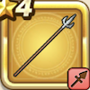

パルチザン
攻略班 5.0点 / けものづきまわしげりさみだれ突き
くわしい特徴
【レベル別習得スキル】 Lv1けものづき（消費MP：3）けもの系に威力180%それ以外の系統には120%の斬撃ダメージを与える Lv8まわしげり（消費MP：8）足で周囲をなぎはらい敵全体に威力110%の体技ダメージを与える Lv20さみだれ突き（消費MP：13）狙いを定めず突きまくりランダムな敵に威力70%の斬撃攻撃を4回する Lv28けもの系へのダメージ+10% Lv36攻撃時+2%の確率で麻痺を与える Lv40攻撃力+8 【限界突破スキル】 1凸スキルの斬撃・体技ダメージ+5% 2凸スキルの斬撃・体技ダメージ+5% 3凸スキルの斬撃・体技ダメージ+5% 4凸スキルの斬撃・体技ダメージ+5%